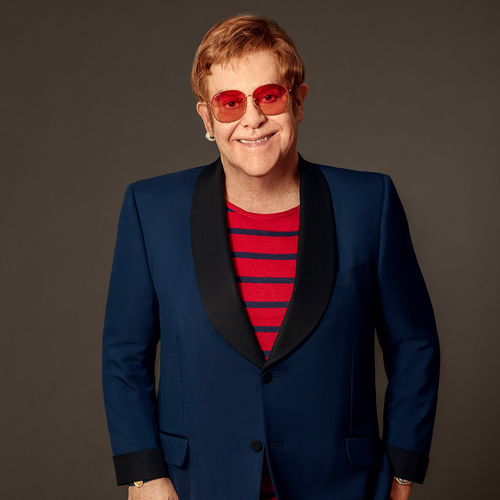

Elton John é um cantor, compositor, pianista e produtor inglês, um dos maiores astros pop de todos os tempos. Elton John (1947) nasceu em Prinner, Middlesex, Inglaterra, no dia 25 de março de 1947. Filho de um trompetista de uma banda amadora logo cedo mostrou interesse pela música. Com 3 anos começou a tocar piano. Com sete anos iniciou seus estudos de música. Estudou na Pinner Country Grammar School e com 11 anos recebeu uma bolsa de estudos para a Royal Academy of Music.
lton John lançou seu primeiro CD em 1969, “Emply Sky”, que só foi lançado nos Estados Unidos, em 1975, depois de consolidada a sua carreira internacional. O sucesso da carreira veio com o lançamento do CD “Your Song”, cuja música de mesmo nome se tornou uma de suas mais famosas composições e consolidou a carreira do cantor. Ainda nos anos 70, começou a chamar atenção pelas roupas espalhafatosas que usava no palco, um verdadeiro desfile de fantasias, sempre com óculos esquisitos que usava para esconder as lentes grossas que usava. Segundo ele, o auge do visual excêntrico foi com o show no Central Park, em Nova Iorque, em 1980, quando vestiu uma fantasia de Pato Donald, incluindo os pés de pato. Entre os anos 80 e 90, a carreira de Elton John passou por certa estagnação, mas seus discos menos inspirados fizeram sucesso. Em 1994 criou “Can You Feel the Love Tonight?”, que fez parte da trilha sonora do filme O Rei Leão, que lhe rendeu o Oscar de Melhor Canção em 1995. Em 1997, foi nomeado o “Cavaleiro do Império Britânico” pela Rainha Elizabeth II, recebendo o título de “sir”. O retorno ao sucesso veio em 2001, com “Song From the West Coast”, que retomava a sonoridade dos álbuns clássicos dos anos 70, como “Tumbleweed Connection” e “Honky Chateau”.
